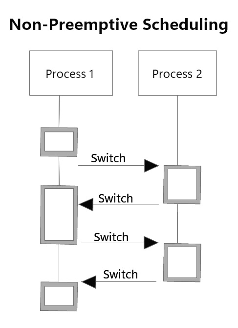

I sitemi non-preemptive sono un vecchio tipo di sistemi operativi incapaci di rimuovere i processi in stato di RUN, quindi un processo doveva finire la sua esecuzione per liberare la CPU e lasciarla agli altri processi.
